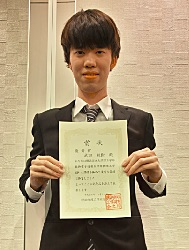
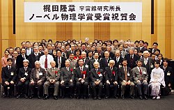
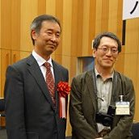

Update : 1 Jul. 2016
Update : 1 Jul. 2016中村研ニュース（2015年度）
【祝】学部４年の武田が成績優秀者の表彰［2016年3月］
学部４年の武田紘樹が，3月24日（木）付けで，平成27年度卒業生の成績優秀者として同窓会から表彰を受けました。修士生２名と学部生４名が修了・卒業［2016年3月］
3月24日（木）に修了式・卒業式が行なわれ，中村研も修士生２名と学部生４名が無事に修了・卒業して学位が授与されました。 修了・卒業したメンバーは次の通りで，卒業した４年生は全員が進学し，そのうち１人は中村研に残りました。- 修士修了
- 入江 郁也，小野 隼人
- 学部卒業
- 日野 陽太，金井 啓晃，武田 紘樹，八木 大介
中村とM2の小野，M1の藤野と山下が日本物理学会で登壇［2016年3月］
3月19日（土）から22日（火・祝）まで，日本物理学会第71回年次大会が東北学院大学泉キャンパスで開催され，博士課程前期１年の藤野と山下が19日に，また，中村と中村研の博士課程前期２年の小野が21日に，それぞれ登壇しました。藤野と山下の講演のタイトルは，藤野が「POLARBEAR実験での広視野観測における大気放射を用いた較正手法の研究」，山下が「LiteBIRDに向けた前景放射除去シミュレーション（2）」で，それぞれ高エネルギー加速器研究機構他と共同で進めている宇宙マイクロ波背景放射観測に関係する研究について報告しました。また，小野と中村の講演のタイトルは，小野が「液体キセノンの赤外発光の測定-3」，中村が「液体キセノンの発光波長変換の可能性」で，こちらもそれぞれ高エネルギー加速器研究機構他と共同で進めている液体キセノンの発光特性に関係する研究について報告し，最新の結果は好評価を受けて，良い雰囲気のもとで質疑応答が行われました。
中村が大学訪問の高校生に講義を実施［2016年3月］
3月17日（木）に，中村が，本学で実施された2015年度横浜市桜ケ丘高等学校・横浜市立高校大学訪問において，「宇宙，素粒子，そしてニュートリノ」というタイトルで講義を行ないました。OBの高木雄太氏が来訪［2016年3月］
3月15日（火）に，中村研OBの高木雄太氏（現・旭化成エレクトロニクス）が来訪しました。OBの水上邦義氏が来訪［2016年3月］
3月14日（月）に，中村研OBの水上邦義氏（現・旭硝子）が来訪しました。中村がミリ波サブミリ波受信機ワークショップに参加［2016年3月］
3月7日（月）と8日（火）に，電気通信大学においてミリ波サブミリ波受信機ワークショップが開かれ，中村もLiteBIRD計画関係の情報を得るために参加しました。中村が神岡鉱山でXMASS実験のシフトを実施［2016年3月］
3月4日（金）から6日（日）まで，中村が，神岡鉱山で進められている暗黒物質探索実験XMASSのシフトを行ないました。学部４年生の４人が卒論発表会で発表［2016年2月］
2月23日（火）に工学部知能物理工学科・理工学部物理工学EPの卒論発表会が開かれ，中村研の４人の学部４年生が発表を行ないました。発表のタイトルは次の通りです。
◎日野 陽太：「液体キセノン中のレイリー散乱長の精密測定に向けたMonte-Carloシミュレーション」◎金井 啓晃：「宇宙マイクロ波背景放射観測シミュレーションのための前景放射マップの作成」
◎武田 紘樹：「液体キセノン中のRayleigh散乱長測定法の提案」
◎八木 大介：「ペルチェ素子を用いた冷却装置による光電子増倍管の低ノイズ化」
M2の２人の院生が修論発表会で発表［2015年2月］
2月16日（火）〜18日（木）に工学府物理情報工学専攻物理工学コースの修論・修了ポートフォリオ発表会が開かれ，17日（水）に中村研の博士課程前期２年の２人の院生が発表を行ないました。発表のタイトルは次の通りです。
◎入江 郁也：「HSCでの弱い重力レンズ効果とCMB偏光観測POLARBEARでの重力レンズ効果の相関関係検出に向けたシミュレーションマップの作成」◎小野 隼人：「液体キセノンシンチレータのUV-Vis-NIR発光の研究」
中村が広報誌『Isotope News』２月号のコラムに執筆［2016年2月］
日本アイソトープ協会の広報誌『Isotope News』No.742（2016年2月号）の「こーひーぶれいく」のページに，依頼されて中村が寄稿しました。 題は，「若き日の樹海探検」です。興味ある方は同誌をご覧下さい。OBのあべ松高志氏が来訪［2016年2月］
2月2日（火）に，中村研OBのあべ松高志氏（現・ルネサスエレクトロニクス）が来訪しました。中村が東京大学主催の梶田隆章先生の祝賀会に出席［2016年1月］
1月29日（金）の夜に，東京大学による，梶田隆章先生のノーベル賞受賞祝賀会が帝国ホテルで開催され，中村も出席し梶田先生のノーベル賞受賞をお祝いしました。次期４年生の仮配属［2016年1月］
1月26日（火）に，中村研の平成28年度の新卒研生として４人が仮配属されました。OBの高木雄太氏が来訪［2016年1月］
1月25日（月）に，中村研OBの高木雄太氏（現・旭化成エレクトロニクス）がOBの話を聞く会のために来訪しました。中村がYNUサイエンスカフェで感謝状［2016年1月］


 1月25日（月）に，中村がYNUサイエンスカフェの運営に長年コーディネータとして携わっていることについて， 学長から感謝状と記念品を授与されました。
また，この表彰式に引き続いて，平成27年度にYNUサイエンスカフェのファシリテータとして貢献の多かった学生への感謝状の授与式も行われました。
1月25日（月）に，中村がYNUサイエンスカフェの運営に長年コーディネータとして携わっていることについて， 学長から感謝状と記念品を授与されました。
また，この表彰式に引き続いて，平成27年度にYNUサイエンスカフェのファシリテータとして貢献の多かった学生への感謝状の授与式も行われました。
中村がYNUサイエンスカフェを担当［2016年1月］
1月14日（木）に第49回YNUサイエンスカフェ「色はバーチャルリアリティ？ 〜あなたの脳内だけの仮想の実在〜」が本学の教育文化ホールにて開催され，中村が司会進行も担当しました。 皆様のお陰様で楽しい会となりましたが，2015年度分はこれで終わりです。2016年度も企画して参りますので，どうかご期待下さい！宇宙科学シンポジウムでＭ1の山下が発表［2016年1月］
1月6日（火），7日（水）に宇宙航空研究開発機構で第16回宇宙科学シンポジウムが開かれ，両日に博士課程前期１年の山下（写真中央）が，宇宙のインフレーションモデルの検証を目指す共同研究，宇宙マイクロ波背景放射のＢモード偏光観測衛星計画LiteBIRDのポスター発表をしました。山下の発表のタイトルは，「LiteBIRDに向けた前景放射除去シミュレーション」でした。中村が神岡鉱山でXMASS実験のシフトを実施［2016年1月］
大晦日の12月31日（木）と新年の1月1日（金）に，中村が，神岡鉱山で進められている暗黒物質探索実験XMASSのシフトを行ないました。【連絡】中村研に関心をお持ちの３年生へ［2015年12月］
本Web内の研究テーマの情報は古いものがありますが，今年も非常に忙しいため更新には時間が掛かりそうです。そこで，研究内容に関する最新の情報は，研究室に直接来てお確かめ下さい。お手数ですが，よろしくお願いします。 なお，以前から，卒研配属を考えている学部３年生へ向けたメッセージを載せています。>> メッセージのページ
中村宅で中村研の忘年会［2015年12月］
12月26日（土）に，中村宅で中村研の忘年会を開きました。今年は中村がとんでもなく忙しかったため開催が危ぶまれましたが，なんとか直前に決めて，現役生の限られた面々でこじんまりと行いました。中村が梶田隆章先生のノーベル賞受賞祝賀会に出席［2015年12月］
12月18日（金）の夜，東京大学宇宙線研究所の共同利用研究成果発表研究会の懇親会を兼ねて，梶田隆章先生のノーベル賞受賞祝賀会が柏の葉カンファレンスセンターで開催され，中村も出席し梶田先生のノーベル賞受賞をお祝いしました。中村が東大宇宙線研共同利用研究成果発表会で講演［2015年12月］
12月18日（金），19日（土）に，東京大学宇宙線研究所の共同利用研究成果発表研究会が東京大学宇宙線研究所（柏キャンパス）で開催され，中村も発表を依頼されて18日（金）の午前に講演を行ないました。講演のタイトルは「液体キセノンシンチレータの近紫外発光の研究」で，前年度から進めている研究の現状と成果を手短に報告しました。
M2の入江，M1の藤野と山下，B4の金井がワークショップに参加［2015年12月］
12月10日（木）から16日（水）まで，ワークショップ“B mode from Space”が千葉県柏市の東京大学カブリ数物連携宇宙研究機構で開かれ，博士課程前期２年の入江と同１年の藤野と山下，そして学部４年の金井が参加しました。中村が学部３年生向けに卒研紹介［2015年12月］
12月3日（木）に，物理工学EPの３年生向けの卒研ガイダンスがあり，中村も研究室紹介を行ないました。わずか７分でしたが，興味を持つきっかけになれば幸いです。詳しいことは，研究室に来て直接聞いて頂ければ幸いです。M2の入江とM1の藤野と山下が放医研のHIMACでビーム試験［2015年11月］
11月28日（土）の10:00から18:00まで，博士課程前期２年の入江と同１年の藤野と山下が，千葉県千葉市穴川の放射線医学総合研究所の重イオン加速器HIMACにおいて実施された，宇宙マイクロ波の偏光観測衛星計画のための各種材料の陽子暴露試験に参加しました。OBの高橋純氏が来訪［2015年11月］
11月4日（水）に，学部と修士の学生時代を中村研で過ごし1998年春に修士を取得した卒業生の高橋純氏が中村研に立ち寄られました。高橋氏は，本年の10月1日付けで，これまでの勤務先の富山大学から，東京学芸大学に異動されました。中村が県下の高校で出張講義［2015年10月］
10月8日（木）に，中村が神奈川県立横須賀高等学校で出張講義を行いました。タイトルは「素粒子物理学と宇宙物理学の世界」で，素粒子物理学と宇宙物理学の面白さを駆け足で紹介しました。県立横須賀高等学校は小柴先生のご出身校ですので，実にご縁を感じます。このような機会に若い高校生の皆さんに自分の得たものを少しでも還元できれば幸いです。【祝】梶田隆章先生ノーベル賞受賞！［2015年10月］
10月6日（火）に，2015年のノーベル物理学賞の発表があり，東京大学宇宙線研究所の梶田隆章所長が受賞されました。梶田先生は中村と同門で小柴研究室の１年先輩であり，昔からそばで見てきましたので，小柴先生に続いて身近な人が純粋な学問を追究した成果により偉大な賞を受賞されたことをとても嬉しく思います。また，梶田さんが所属してきた実験グループを強いリーダーシップで牽引してこられ，惜しくも2008年にご病気で逝去された故戸塚洋二先生のご功績についても，関係者は一生忘れることは無いでしょう。東京学芸大学の大西（市川）和子氏が来訪［2015年10月］
10月1日（木）に，以前に中村研の学生がお世話になった東京学芸大学の大西（市川）和子氏が，プラスチック飛跡検出器CR-39の情報収集のため中村研に来訪されました。中村がYNUサイエンスカフェを担当［2015年9月］
9月29日（火）に第46回YNUサイエンスカフェ「宇宙プラズマ推進 〜小惑星探査機「はやぶさ」は宇宙空間をどうやって進むのか？〜」が本学の教育文化ホールにて開催され，中村もコーディネータとして担当しました。中村が小柴研同窓会「クォーク会」に出席［2015年9月］
9月19日（土）に，小柴研究室の同窓会「クォーク会」が開かれ，中村が出席しました。小柴先生は満89歳になられました。M2の入江とM1の藤野と山下が日本物理学会秋季大会で登壇［2015年9月］
9月25日（金）から28日（月）まで，日本物理学会2015年秋季大会が大阪市立大学杉本キャンパスで開催され，中村研の博士課程前期２年の入江と同１年の藤野と山下が，25日にそれぞれ登壇しました。講演のタイトルは，入江が「HSCにおける弱い重力レンズ効果とPOLARBEAR CMB偏光観測における重力レンズ効果のクロスコリレーション（II）」（交代で登壇），藤野が「POLARBEAR実験におけるTESボロメータのゲインの較正手法の研究」，山下が「LiteBIRDに向けた前景放射除去シミュレーション」で，それぞれ高エネルギー加速器研究機構他と共同で進めている宇宙マイクロ波背景放射観測に関係する研究について報告しました。
XMASS実験が季節変動によるダークマター探索結果を発表［2015年9月］
9月7日（月）に，中村等が属するXMASS実験グループが，季節変動によるダークマター探索の結果を発表しました。＞＞＞ 発表の文書
ダークマターは相変わらず謎で，さらに研究は続きます。
大学院工学府博士課程（前期）の一般選抜で２名合格［2015年9月］
平成28年度横浜国立大学大学院工学府博士課程（前期）の一般選抜において，本研究室を志望する受験生が２名合格しました。中村が神岡鉱山でXMASS実験のシフトを担当［2015年8月］
8月14日（金）から16日（日）まで，中村が，神岡鉱山で進められている暗黒物質探索実験XMASSのシフトを行ないました。本学の広報誌『ヨコマガ』に中村の記事が掲載［2015年8月］
本学の学生向け広報誌『ヨコマガ』通刊58号（平成27年8月発行）の「あの先生の知られざる横顔」のページに，中村が取り上げられています。副題は，「自然と人間の関わりについて考える。」です。興味ある方はご覧下さい。＞＞＞ 『ヨコマガ』通刊58号
大学院工学府博士課程（前期）の特別選抜で１名合格［2015年8月］
平成28年度横浜国立大学大学院工学府博士課程（前期）の特別選抜において，本研究室を志望する受験生が１名合格しました。東大カブリIPMUの片山伸彦副機構長の談話会［2015年7月］
集中講義に合わせ，7月31日（金）に，東京大学カブリ数物連携宇宙研究機構の副機構長の片山伸彦先生に，学科の談話会をお願いしました。題目は「LiteBIRDー熱いビッグバン以前の宇宙を探索する宇宙マイクロ波背景放射偏光観測衛星」で，ビッグバン以前のインフレーションと呼ばれる宇宙の急膨張の証拠を掴むための宇宙マイクロ波背景放射のＢモード偏光を観測する実験計画についてお話し頂きました。M1の藤野が米国University of California, Berkeleyで発表［2015年7月］
7月13日（月）から17日（金）まで，宇宙マイクロ波背景放射のＢモード偏光の地上観測を南米チリで進めているPOLARBEAR実験のface to faceミーティングが米国University of California, Berkeleyで開かれ，中村研の博士課程前期１年の藤野が13日（月）に発表しました。発表のタイトルは，“Elnod for large patch”で，無偏光である大気の熱放射を利用したPOLARBEAR実験の偏光度測定光学系における系統誤差について発表しました。
【おくやみ】南部陽一郎先生ご逝去［2015年7月］
7月5日（日）に，本邦の誇る理論物理学者の南部陽一郎先生が９４歳でご逝去されました。南部先生は，ノーベル賞の対象となった対称性の自発的破れに関するお仕事の他にも，クォークのカラーの発見，紐理論のお仕事など重要なお仕事は数多く，我々にとって神様のような先生でした。中村が学生の頃，昼食時に食事を待つテーブルで，南部先生が発せられる言葉を他の偉い先生方が預言者のお告げのように聞き逃すまいとしていたことが今も忘れられません。ご生前の重要なお仕事に感謝申し上げるとともに，心よりご冥福をお祈りいたします．．．【祝】博士課程前期２年の入江が成績優秀者の表彰［2015年5月］

 博士課程前期２年の入江郁也が，5月29日（金）付けで，平成26年度工学府博士課程前期１年のコース内の成績優秀者として副学長から表彰を受けました。
博士課程前期２年の入江郁也が，5月29日（金）付けで，平成26年度工学府博士課程前期１年のコース内の成績優秀者として副学長から表彰を受けました。
M1の藤野と山下が放医研のHIMACでビーム試験［2015年5月］
5月14日（木）22:00から15日（金）6:00にかけて，博士課程前期１年の藤野と山下が，千葉県穴川の放射線医学総合研究所のHIMACにおいて行われた，宇宙マイクロ波の偏光観測衛星計画のための各種材料の陽子暴露試験に参加しました。中村が神岡鉱山でXMASS実験のシフトを担当［2015年5月］
5月4日（月・祝）から6日（水・祝）まで，中村が，神岡鉱山で進められている暗黒物質探索実験XMASSのシフトを担当しました。中村が神岡鉱山でXMASS実験のシフトを担当［2015年4月］
4月25日（土），26日（日）に，中村が，神岡鉱山で進められている暗黒物質探索実験XMASSのシフトを担当しました。高エネルギー加速器研究機構との共同研究を延長［2015年4月］
高エネルギー加速器研究機構と前年度まで続けてきた共同研究「希ガスシンチレータの研究」について，再び今年度から２年間延長する覚書を交わしました。この研究でも引き続き，従来に知られているよりも長波長でのシンチレーションに関する研究を進めていく予定です。KEKサマーチャレンジ2015の募集開始［2015年4月］
第９回となる夏のKEKサマーチャレンジが，今年も，8月18日（火）〜26日（水）にKEKで行われます。中村は今年は演習テーマを受け持ちませんが，企画委員としては関わります。応募要領がhttp://www2.kek.jp/ksc/以下に公表され，〆切は5月14日（木）ですので，研究者を志す大学３年生の皆さんは，横浜国大内外から奮ってご応募下さい！OBのあべ松高志氏が来訪［2015年4月］
4月2日（木）に，中村研OBのあべ松高志氏（現・ルネサスシステムデザイン，写真右）が会社説明会のために来訪しました。なお，あべ松氏は１年ほど前にご結婚されたそうです。どうもおめでとうございます。LiteBIRDが研究拠点形成事業（A.先端拠点形成型）に採択［2015年4月］
LiteBIRD計画に関連し，カブリIPMUを中心とした「インフレーション宇宙の実証を目指す国際連携研究拠点」が採択され，横浜国立大学も参加機関になっています。２名が大学院に進学し，４名が卒研配属しました［2015年4月］
2015年度がスタートし，進学した新Ｍ１の２人と新４年生４人が研究室に配属されました。- 藤野 琢郎（M1）
- 山下 徹（M1）
- 安達 佑哉（B4）
- 金井 啓晃（B4）
- 武田 紘樹（B4）
- 八木 大介（B4）